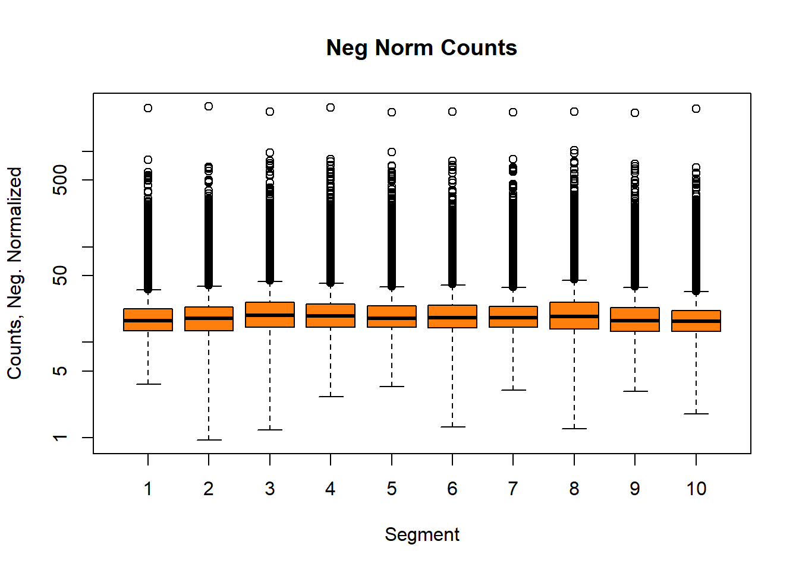

Analyzing GeoMx-NGS RNA Expression Data with GeomxTools
Jason Reeves, Prajan Divakar, Nicole Ortogero, Maddy Griswold, Zhi Yang, Stephanie Zimmerman, Rona Vitancol and David Henderson
Overview of GeoMx-NGS Workflow

What is spatial profiling and why perform spatial profiling?
Overview of the Dataset
- We will analyze a GeoMx kidney dataset created with the human whole transcriptome atlas (WTA) assay. The dataset includes 4 diabetic kidney disease (DKD) and 3 healthy kidney tissue samples.
Overview of the Dataset
The key data files are:
DCCs files - expression count data and sequencing quality metadata
PKCs file(s) - probe assay metadata describing the gene targets present in the data
Annotation file - useful tissue information, including the type of segment profiled (ex: glomerulus vs. tubule), segment area/nuclei count, and other tissue characteristics (ex: diseased vs. healthy).
Overview of the Dataset
datadir <- system.file("extdata", "WTA_NGS_Example",
package="GeoMxWorkflows")
DCCFiles <- dir(file.path(datadir, "dccs"), pattern = ".dcc$",
full.names = TRUE, recursive = TRUE)
SampleAnnotationFile <-
dir(file.path(datadir, "annotation"), pattern = ".xlsx$",
full.names = TRUE, recursive = TRUE)
PKCFiles <- unzip(zipfile = dir(file.path(datadir, "pkcs"), pattern = ".zip$",
full.names = TRUE, recursive = TRUE))Overview of the Analysis Methods

Overview of the Tools
library(NanoStringNCTools)
library(GeomxTools)
library(GeoMxWorkflows)
library(dplyr)
library(ggplot2)
library(scales) # determining breaks for axes (i.e. for percent)
library(reshape2) # transform the data (i.e. for melt)
library(cowplot) # for plot_grid
library(umap) # dimensionality reduction
library(Rtsne) # dimensionality reduction
library(pheatmap) # for heatmap
library(ggrepel) # repel overlapping text labelsSelected Interesting Results
QC & Pre-processing
col_by <- "segment"
# Graphical summaries of QC statistics plot function
QC_histogram <- function(assay_data = NULL,
annotation = NULL,
fill_by = NULL,
thr = NULL,
scale_trans = NULL) {
plt <- ggplot(assay_data,
aes_string(x = paste0("unlist(`", annotation, "`)"),
fill = fill_by)) +
geom_histogram(bins = 50) +
geom_vline(xintercept = thr, lty = "dashed", color = "black") +
theme_bw() + guides(fill = "none") +
facet_wrap(as.formula(paste("~", fill_by)), nrow = 4) +
labs(x = annotation, y = "Segments, #", title = annotation)
if(!is.null(scale_trans)) {
plt <- plt +
scale_x_continuous(trans = scale_trans)
}
plt
}QC & Pre-processing

QC & Pre-processing

Normalization
Normalize the GeoMx data for downstream visualizations and differential expression.

Effects of Normalization
We will use Q3 normalized data moving forward. We use the normalize function from NanoStringNCTools to create normalization factors reflecting each data type.


Dimention Reduction (UMAP)

Dimention Reduction (UMAP)
library(umap)
# update defaults for umap to contain a stable random_state (seed)
custom_umap <- umap::umap.defaults
custom_umap$random_state <- 42
# run UMAP
umap_out <-
umap(t(log2(assayDataElement(target_demoData , elt = "q_norm"))),
config = custom_umap)
pData(target_demoData)[, c("UMAP1", "UMAP2")] <- umap_out$layout[, c(1,2)]
ggplot(pData(target_demoData),
aes(x = UMAP1, y = UMAP2, color = region, shape = class)) +
geom_point(size = 3) +
theme_bw()Dimention Reduction (t-SNE)
Dimention Reduction (t-SNE)
library(Rtsne)
set.seed(42) # set the seed for tSNE as well
tsne_out <-
Rtsne(t(log2(assayDataElement(target_demoData , elt = "q_norm"))),
perplexity = ncol(target_demoData)*.15)
pData(target_demoData)[, c("tSNE1", "tSNE2")] <- tsne_out$Y[, c(1,2)]
ggplot(pData(target_demoData),
aes(x = tSNE1, y = tSNE2, color = region, shape = class)) +
geom_point(size = 3) +
theme_bw()Clustering High CV Genes
Clustering High CV Genes
library(pheatmap) # for pheatmap
# create a log2 transform of the data for analysis
assayDataElement(object = target_demoData, elt = "log_q") <-
assayDataApply(target_demoData, 2, FUN = log, base = 2, elt = "q_norm")
# create CV function
calc_CV <- function(x) {sd(x) / mean(x)}
CV_dat <- assayDataApply(target_demoData,
elt = "log_q", MARGIN = 1, calc_CV)
# show the highest CD genes and their CV values
sort(CV_dat, decreasing = TRUE)[1:5]
#> CAMK2N1 AKR1C1 AQP2 GDF15 REN
#> 0.5886006 0.5114973 0.4607206 0.4196469 0.4193216
# Identify genes in the top 3rd of the CV values
GOI <- names(CV_dat)[CV_dat > quantile(CV_dat, 0.8)]
pheatmap(assayDataElement(target_demoData[GOI, ], elt = "log_q"),
scale = "row",
show_rownames = FALSE, show_colnames = FALSE,
border_color = NA,
clustering_method = "average",
clustering_distance_rows = "correlation",
clustering_distance_cols = "correlation",
breaks = seq(-3, 3, 0.05),
color = colorRampPalette(c("purple3", "black", "yellow2"))(120),
annotation_col =
pData(target_demoData)[, c("class", "segment", "region")])Visualizing DE Genes (Volcano)
Visualizing DE Genes (Volcano)
library(ggrepel) # repel the text
# Categorize Results based on P-value & FDR for plotting
results$Color <- "NS or FC < 0.5"
results$Color[results$`Pr(>|t|)` < 0.05] <- "P < 0.05"
results$Color[results$FDR < 0.05] <- "FDR < 0.05"
results$Color[results$FDR < 0.001] <- "FDR < 0.001"
results$Color[abs(results$Estimate) < 0.5] <- "NS or FC < 0.5"
results$Color <- factor(results$Color,
levels = c("NS or FC < 0.5", "P < 0.05",
"FDR < 0.05", "FDR < 0.001"))
# pick top genes for either side of volcano to label
# order genes for convenience:
results$invert_P <- (-log10(results$`Pr(>|t|)`)) * sign(results$Estimate)
top_g <- c()
for(cond in c("DKD", "normal")) {
ind <- results$Subset == cond
top_g <- c(top_g,
results[ind, 'Gene'][
order(results[ind, 'invert_P'], decreasing = TRUE)[1:15]],
results[ind, 'Gene'][
order(results[ind, 'invert_P'], decreasing = FALSE)[1:15]])
}
top_g <- unique(top_g)
results <- results[, -1*ncol(results)] # remove invert_P from matrix
# Graph results
ggplot(results,
aes(x = Estimate, y = -log10(`Pr(>|t|)`),
color = Color, label = Gene)) +
geom_vline(xintercept = c(0.5, -0.5), lty = "dashed") +
geom_hline(yintercept = -log10(0.05), lty = "dashed") +
geom_point() +
labs(x = "Enriched in Tubules <- log2(FC) -> Enriched in Glomeruli",
y = "Significance, -log10(P)",
color = "Significance") +
scale_color_manual(values = c(`FDR < 0.001` = "dodgerblue",
`FDR < 0.05` = "lightblue",
`P < 0.05` = "orange2",
`NS or FC < 0.5` = "gray"),
guide = guide_legend(override.aes = list(size = 4))) +
scale_y_continuous(expand = expansion(mult = c(0,0.05))) +
geom_text_repel(data = subset(results, Gene %in% top_g & FDR < 0.001),
size = 4, point.padding = 0.15, color = "black",
min.segment.length = .1, box.padding = .2, lwd = 2,
max.overlaps = 50) +
theme_bw(base_size = 16) +
theme(legend.position = "bottom") +
facet_wrap(~Subset, scales = "free_y")Visualizing DE Genes (Heatmap)

Visualizing DE Genes (Heatmap)
# select top significant genes based on significance, plot with pheatmap
GOI <- unique(subset(results, `FDR` < 0.001)$Gene)
pheatmap(log2(assayDataElement(target_demoData[GOI, ], elt = "q_norm")),
scale = "row",
show_rownames = FALSE, show_colnames = FALSE,
border_color = NA,
clustering_method = "average",
clustering_distance_rows = "correlation",
clustering_distance_cols = "correlation",
cutree_cols = 2, cutree_rows = 2,
breaks = seq(-3, 3, 0.05),
color = colorRampPalette(c("purple3", "black", "yellow2"))(120),
annotation_col = pData(target_demoData)[, c("region", "class")])Take Home Highlights
- QC & Pre-processing and Normalization
- Unsupervised Analysis
- UMAP & t-SNE plots
- Clustering high coefficient of variation (CV) genes (heatmap)
- Visualizing Differential Expression
- Volcano Plot
- heatmap
Conclusion
Learned Interesting Skills
- How to plot UMAP & t-SNE Plots
- How to plot volcano plot
- How to plot heatmap using pheat packages
- QC & processing and normalization
Challeges
- Install the Packages (Enviorment)
- Load the Data
- Understand the object and related functions from the packages
- QC & preprocessing